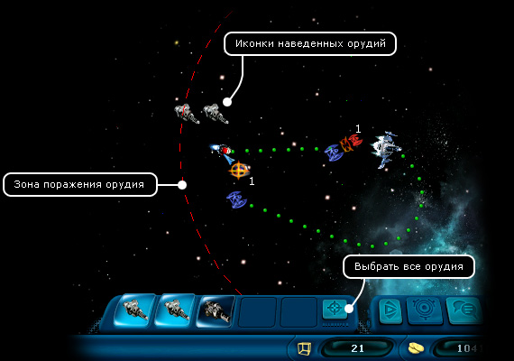
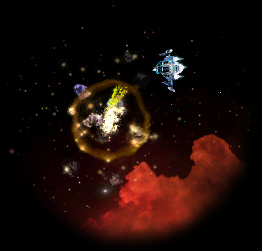
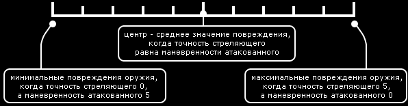

Руководство рейнджера
> Экран космоса >
Стрельба из орудий
|
Руководство рейнджера
> Экран космоса >
Стрельба из орудий
|
| Стрельба из орудий Игрок может вести сражение с другими кораблями в одном из двух режимов: 1. В режиме преследования "Автобой". В этом случае сражение происходит автоматически, и игроку остается только за ним наблюдать, ожидая победного конца. Этот вариант полезен, если вы ведете сражение с одним кораблем и полностью уверены в своем превосходстве. 2. В ручном режиме. В этом случае игрок управляет наведением орудий и полетом своего корабля каждый ход. В ручном режиме игрок должен подготовить орудия к бою (т.е. раскрыть оружейную панель), навести орудия на цель, а затем начать стрельбу. Можно вести огонь по нескольким целям одновременно, каждой цели назначая свое орудие. Также можно навести на одну цель сразу несколько орудий. А вот назначить одно и то же орудие двум разным целям нельзя, поэтому желательно иметь на борту как можно больше пушек! |

Чтобы навести орудие на цель: 1. Щелкните по конкретному орудию. На экране появится круг, показывающий зону поражения данного орудия. При этом курсор мыши изменит свой внешний вид. 2. Щелкните по цели. Над целью появится иконка наведенного орудия. Примечание. Если цель находится вне зоны поражения, то навести орудие не удастся. Чтобы навести на цель все оружие, какое только можно: 1. Нажмите кнопку "Выбрать все орудия" (~). 2. Щелкните по цели. Над целью появятся иконки тех орудий, которые удалось навести (т.е. зона поражения которых достигает цели). Чтобы выбрать все еще не наведенные орудия: • Нажмите клавишу "+". Чтобы отменить наведение орудия на цель: • Щелкните по иконке наведенного орудия на оружейной панели. Чтобы осуществить стрельбу из наведенных орудий: • Нажмите кнопку "Конец хода". Добыча минералов из астероидов  Стрелять можно не только по другим кораблям. Расстреливая астероиды, можно получать из них минералы. Каждый астероид несет в себе некоторый запас полезных ископаемых. Если астероид расстрелять аккуратно, то этот запас, практически не поврежденный, выпадает в космос в виде минералов, и их впоследствии можно будет собрать или расстрелять заново, чтобы поделить на более мелкие кусочки. Собранные минералы можно продать в торговом центре на любой заселенной планете. |
|
Для тех, кто хочет разобраться в механике игры, как вычисляются повреждения оружия в бою. У каждого оружия свой диапазон повреждений; есть минимальновозможные и максимальновозможные повреждения. Конкретные значения вы можете узнать во всплывающем окошке при наведении мышкой на оружие. На повреждения влияют не только характеристики оружия, но и два навыка пилота: точность и маневренность. Когда мы стреляем во врага, то два навыка (наша точность и вражеская маневренность) начинают взаимодействовать. Так как используется два навыка, то можно получить 10 комбинаций точек отсчета повреждений. Представим повреждения в виде шкалы с десятью делениями, где минимальное повреждение будет началом, а максимальное - концом шкалы, тогда можно будет изобразить подсчет повреждений в виде графика: |

| Точка отсчета повреждений отмечается в зависимости от значений навыков. Далее происходит расчет случайности выстрела. Пример №1
Пример №2
Пример №3
Когда вычислена мощность повреждений оружия, из этого числа вычитается значение блокировки повреждений генератора защиты и значение защитного свойства корпуса. И, наконец, мы получаем реальное количество повреждений. Примечание. Также на точность оружия так же может оказать влияние некоторое нестандартное оборудование (артефакты). На этих примерах вы можете убедиться, насколько важно улучшать навыки точность и маневренность для успешного ведения боя. |
|
|